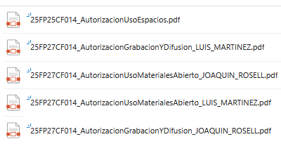

La planificació d’una acció formativa és clau per al seu bon desenvolupament. Un disseny inadequat pot dificultar tant la gestió com la justificació de les despeses, i fins i tot impedir el seu pagament.
Tota la documentació del curs s’ha de guardar a la carpeta corresponent del canal de TEAMS "Gestió accions formatives", seguint estrictament el protocol d’enviament establit.
Planificació d'accions formatives
Abans de res, la formació ha de ser autoritzada per la Direcció i pel Subdirector General de Formació Professorat. Disposeu d’un full de càlcul per trametre les propostes, accessible des d’ací:
Planificació accions formatives
Full de càlcul per a la planificació d'accions formatives i assignació de campanyes. Un cop assignada la campanya, es crea la carpeta de l'acció formativa a la ubicació corresponent.
Carpeta d'accions formatives
Aquesta divisió es deu al fet que cada curs es finança amb una campanya diferent. Per això, cal assignar una campanya al curs abans de començar. A la carpeta es troben les subcarpetes següents (AAPP: Administracions Públiques; FSE: Fons Social Europeu; PAA_COST_0: Plan Anual Activitats a Cost 0)

La carpeta ha de portar el codi de l'acció formativa assignat per Gesform i el nom de l'assessor/a.
Cal donar d’alta l'acció formativa a Gesform abans de crear-la.
Example:
"26XX99XX001" (Any | CEFIRE | Àrea| Nivell | Codi) + "_" + nom de l'assessor/a.
Una vegada creada la carpeta, hem de crear una sèrie de subcarpetes i arxius per a organitzar la documentació del curs. Els documments necessaris són els següents:
DOCUMENTACIÓ INICI ACCIÓ FORMATIVA
- 25COXXNIXXX_FSE_DESIGNA_NOM_PONENT.pdf: (Convocatòria FSE) Aquest document és necessari per a designar el ponent de la formació, cal que estiga degudament omplert i signat pel Director i pel Subdirector General. [Descàrrega d'arxiu]
- 25COXXNIXXX_DADESPONENTS_NOM.pdf: Es tracta d'un document on es detallen totes les dades del ponent, cal que estiga correctament omplert i que no tinga cap errada. [Descàrrega d'arxiu].
- 25COXXNIXXX_PROPER_NOM.pdf: És necessari que el ponent es done d'alta en la plataforma PROPER abans de començar la formació i que vos facilite el document de confirmació d'alta ja que aquest document caduca a los 6 mesos. Comproveu que el número de compte siga el mateix que el de les dades que ha facilitat en la fitxa CODI_DADESPONENTS_NOM.pdf.
PROPER en: https://www.gva.es/es/inicio/procedimientos?id_proc=22648
- 25COXXNIXXX_AutorizacionUsoEspacios.pdf: Autorització per a l'ús de espais, és un document que cal omplir i signar digiltalment per part del assessor/a i responsable del lloc on es va a desenvolupar l'acció formativa en modalitat presencial. [Descàrrega d'arxiu]
- 25COXXNIXXX_AutorizacionUsoMaterialesAbierto_NOM.pdf: Autorització per a l'ús de materials oberts, és un document que cal omplir i signar per part del ponent. [Descàrrega d'arxiu]
- 25COXXNIXXX_AutorizacionGrabacionYDifusion_NOM.pdf: Autorització per a la gravació i difusió de la formació, és un document que cal omplir i signar per part del ponent. [Descàrrega d'arxiu]
- 25COXXNIXXX_INFORME_NECESSITATS_NOFUNCIONARI.docx [Descàrrega d'arxiu]
25COXXNIXXX_INFORME_NECESSITATS_NOFUNCIONARI.pdf: Si el ponent no és funcionari GVA cal fer un informe de perquè estàs fent esta contractació.
- 25COXXNIXXX_INFORME_NECESSITATS.docx [Descàrrega d'arxiu]
25COXXNIXXX_INFORME_NECESSITATS.pdf: Si el ponent es una Empresa/Autònom o Entitat Col·laboradora GVA o Universitat, cal fer un informe de per què estàs fent esta contractació.
- 25COXXNIXXX_FACTURA_PROFORMA_NOM.pdf
- 25COXXNIXXX_FITXAECONOMICA.xlsx [Descàrrega d'arxiu]
25COXXNIXXX_FITXAECONOMICA.pdf: Es tracta de la fitxa econòmica del curs, on es detallen els costos i pressupostos. És imprescindible que aquesta fitxa estiga ben omplerta i no tinga cap errada, les errades de esta fitxa NO ES PODEN CORREGIR ja que s'inicien procesos que fan difícil corregir els canvis que ací es posen.
DOCUMENTACIÓ A LA FINALITZACIÓ ACCIÓ FORMATIVA
- 25COXXNIXXX-EVIDENCIAS: Cal crear una subcarpeta on es posaran totes les evidències necessàries per a justificar la formació.
- 25COXXNIXXX_BANER_VA.png
- 25COXXNIXXX_BANER_ES.png
- etc...
- 25COXXNIXXX_Evidencias.pdf: On es posaran totes les evidències necessàries per a justificar la formació. Baners, publicació en web, fotos, etc...
- 25COXXNIXXX_CuadroTexto.docx: Es tracta d'un formulari que cal emplenar. [Descàrrega d'arxiu]
- 25COXXNIXXX_FSE_FichaSeguimiento.docx: (Convocatòria FSE) On es posarà la fitxa de seguiment de la formació. [Descàrrega d'arxiu]
- 25COXXNIXXX_ACTA_FINAL.pdf: Acta amb els APTES i NO APTES de la formació, cal que estiga degudament omplerta i signada digitalment per part del ponent, es trau de gesform.
- 25COXXNIXXX_ACTA_PONENT.pdf: Acta signada pel ponent on posa els APTES i NO APTES de la formació, la genera ell/a. [Descàrrega d'arxiu]
- 25COXXNIXXX_FULLSIGNATURES.pdf: Document amb totes les signatures de la formació escanejades en modalitat presencial.
Si ha sigut l'acció formativa amb Factura:
- 25COXXNIXXX_FACE_REGXX.pdf: Justificant de registre de la factura en FACE.
Example Curs a distáncia amb Minuta No Funcionario:

Example Curs a distáncia con sessions pressencials per Empreses/Autònoms o Entitat Col·laboradora GVA o Universitats
S'afegix Factura Proforma y quan acaba la formació la factura generada a FACE y el justificant de FACE.

Autorització d'ús de materials de l'acció formativa i/o si hi ha Grabació i/o Difusió (per Teams) o si es presencial necessitem ús d'espais per a desenvolupar l'acció formativa, necessitem a la carpeta aquests documents:
